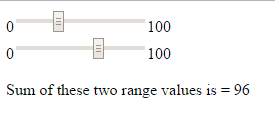
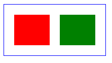
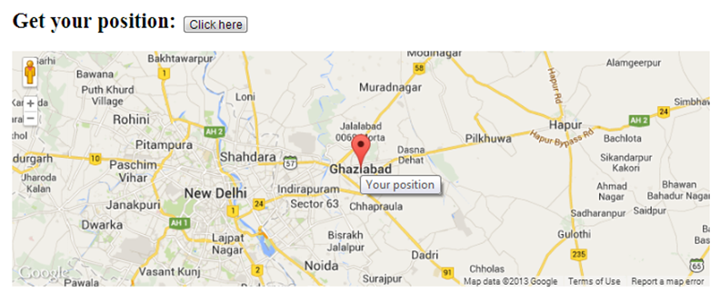

The <output> element represents the result of a calculation (like one performed by a script)
<form oninput="x.value=parseInt(a.value)+parseInt(b.value)">
0<input type="range" id="a" value="50">100
<br>
0<input type="range" id="b" value="50">100
<br> <br>Sum of these two range values is =
<output name="x" for="a b"></output>
</form>

New Attributes Removed Elements
HTML 4.01 removed elements from HTML5
<acronym>
<applet>
<basefont>
<big>
<center>
<dir>
<font>
<frame>
<frameset>
<noframes>
<strike>
<tt>
Graphics
With HTML5, drawing graphics is easier than ever:
Using the <canvas> element
Using inline SVG
Using CSS3 2D/3D
What is Canvas ?
<canvas> element is used to draw graphics
Rectangular area, Arc, Curve on an HTML page
By default, the <canvas> element has no border and no content
<canvas> element is used to draw graphics on a web page via scripting (usually JavaScript)
<body>
<canvas id="myCanvas" width="200" height="100“
style="border:1px solid blue;">
Your browser does not support the HTML5 canvas tag.
</canvas>
<script>
var c=document.getElementById("myCanvas");
var ctx=c.getContext("2d");
ctx.fillStyle="red";
ctx.fillRect(20,20,70,60);
ctx.fillStyle="green";
ctx.fillRect(110,20,70,60);
</script>
</body>

What is SVG ?
<canvas>Scalable Vector Graphics
<canvas>SVG defines the graphics in XML format
<canvas>SVG graphics do NOT lose quality if they are zoomed or resized
<canvas>SVG elements can be animated
<canvas>SVG is a W3C recommendation
SVG Advantages
SVG images
can be created and edited with any text editor
can be searched, indexed, scripted, and compressed
are scalable
can be printed in high quality at any resolution
are zoom-able (image can be zoomed without degradation)
Canvas Vs SVG Multimedia
No standard prior to HTML5
HTML5 defines a new element which specifies a standard way to embed a video/movie on a web page
<video>
<audio>
Playing video and audio is easier than ever
Geolocation
The HTML5 Geolocation API is used to get the geographical position of a user
Requires Users Approval
Geolocation is much more accurate for devices with GPS receiver inbuilt- like iPhone

Web Storage
Data can be stored locally within the user’s browser using local data storage
Earlier, cookies were to be used for this
Web Storage is more secure and faster
The data is included ONLY when asked for
It is also possible to store large amounts of data, without affecting the website performance
Data is stored in key/value pairs
A web page can only access data stored by itself
Web Storage
There are two new objects for storing data on the client:
localStorage
Stores data with no expiration
Data will not be deleted with the closing of browser
sessionStorage
Same as localStorage
Stores data for one session
Data will be deleted with the closing of browser
Web Storage
<div id="show"></div>
<script>
if(typeof(Storage)!="undefined") {
localStorage.name="TKHTS";
document.getElementById("show").innerHTML=
"Name: " + localStorage.name;
}
else {
document.getElementById("show").innerHTML=
"Sorry, no support for web storage";
}
</script>
Application Cache
Application cache means that a web application is accessible offline
Browsers may have different size limits for cached data
Application cache gives three advantages to the application:
Offline browsing
Speed
Reduced server load
Note
Be careful when you cache
Browser will show the cached version
Even after changes in the server file
To know the browser updates, change the manifest file
Application Cache - Manifest File
For the offline applications to work, a cache manifest file must be created by the web developer
Each page must have a manifest attribute that points to the cache manifest
The cache manifest file is a text file located in another part of the server
It must be served with the following content type: